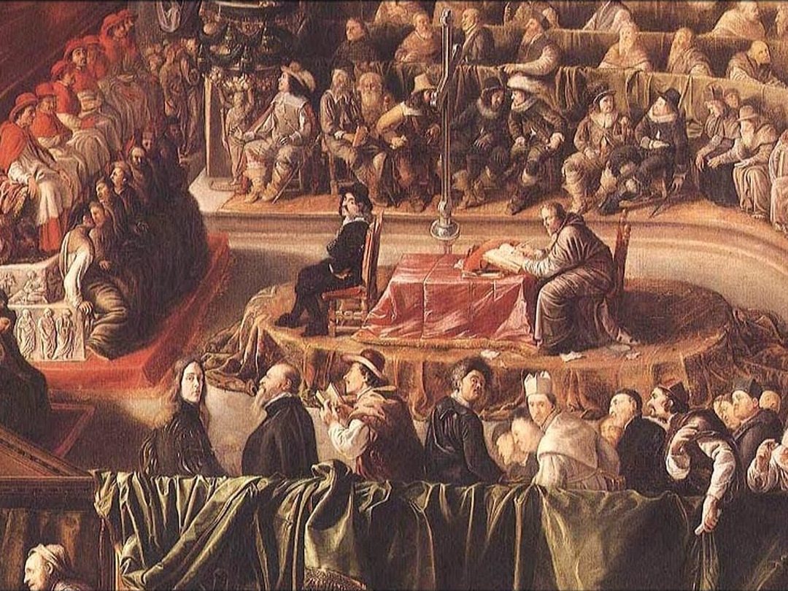
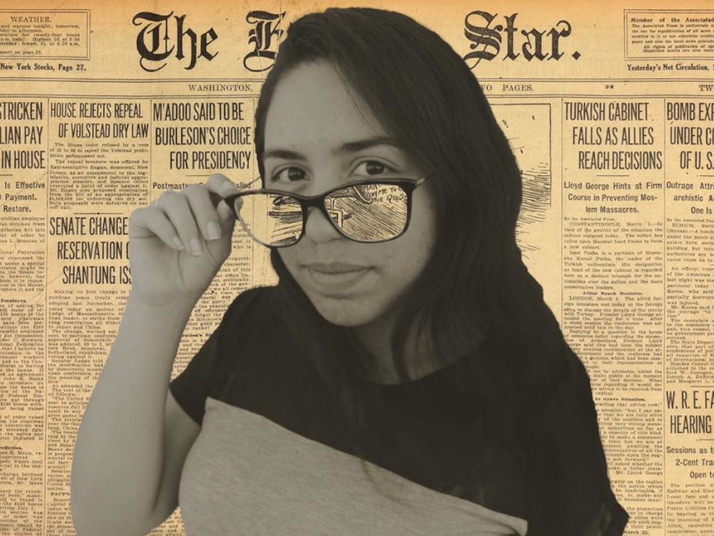

Galeria
Durante estes anos realizei diversos trabalhos e passei por momentes marcantes. Na galeria abaixo, confira alguns destes:
-
Webdoc - N. Sra. Oliveira
No ano de 2019, em TPAFEV I realizamos um Webdocumentário sobre a padroeira da cidade: N. Sra da Oliveira. Assistir vídeo -
Design Gráfico
Realizamos trabalhos com base nos conhecimentos adquiridos por meio do componente curricular Design Gráfico -
IFCode
Participei de eventos de programação, os quais foram grandes responsáveis pelo meu gosto pelos códigos. -

Vídeo aulas
Juntamente de alguns colegas, realizei video aulas para componentes curriculares. Ao lado, disponibilizo uma video aula realizada para história. Assistir vídeo -
Caifeína... Muita cafeína!
No IF aprendi que café é um dos meus maiores aliados! -
Eventos
Apesar da pandemia, apresentei alguns projetos em alguns eventos, como o salão do conhecimento. Assistir vídeo -
Eventos
Apesar da pandemia, apresentei alguns projetos em alguns eventos, como o salão do conhecimento. Assistir vídeo -

Design Gráfico
Realizamos trabalhos com base nos conhecimentos adquiridos por meio do componente curricular Design Gráfico. -
Premiações
Com as participações em competições de programação, vieram ta,bém algumas premiações. -
Sites
Desenvolvi alguns sittes. Para exemplificação, o vídeo abaixo trata-se de um site desenvolvido no IFCode etapa Vacaria 2019. Assistir vídeo -
Vídeos promocionais
Realizamos vídeos "promocionais" para alguns componentes curriculares. Assim, pudemos colocar em prática conhecimentos teóricos adquiridos. Assistir vídeo -
Carreira
Por meio de trabalhos audiovisuais, falei sobre possíveis carreiras que gostaria de seguir. Assistir vídeo -
Amizades
Fiz amizades com pessoas de outros campus -

OBLP
Fomos selecionados para etapa estadual da Olímpiada de Língua Portiguesa, por meio de um documentário falando sobre a cidade. Assistir vídeo